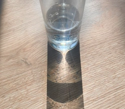
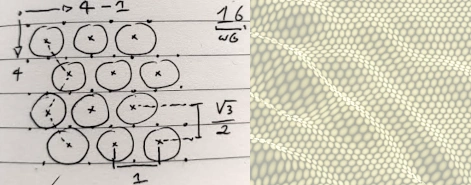
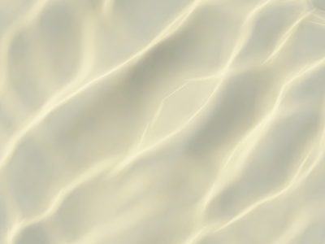
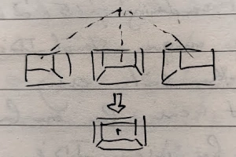

Most time in the game, players will be looking at water, where the koi live. It's important that things look nice underwater, so I've added another improvement: an effect known as caustics. When sunlight gets refracted by the water surface, light rays change direction. Some will end up together and create light bands, while areas where light rays diverge will receive less light. Especially the bands of concentrated light can have very nice interactions with materials like shiny scales.
The problem with caustics is that the way to render them is basically to calculate the trajectory of a large number of rays of light. Some rays end up in the same place, and they need to add up to get the final value for light exposure. Raytracing takes a lot of GPU power and I want to do many other things, so I've had to come up with a way to render caustics without stressing the hardware too much.

Every time I encounter a problem that seems super suitable for hardware raytracing, it turns out there are better solutions that also happen to work on older computers. The raytracing problem in this case is quite simple: rays only need to refract through a medium once. I've created a system that simulates a large (but relatively low) number of rays that don't end up on the surface as a dot, but rather as an ellipse that's deformed depending on the way the light refracts. Concentrated beams will produce smaller brighter ellipses, while diverging beams will produce larger dimmer ellipses.

These ellipses are rendered as splats using a technique called gaussian splatting, which blends together overlapping flares that together make up the final image. This image, in this case, acts as a light filter for everything that's underwater. The filter either dims light or amplifies it depending on the way light is focused by the waves.
To reduce the number of splats required to get a high quality filter image, I don't cast them from a square grid, but rather from a hexagonal grid. It's a bit more complicated to distribute rays this way, but it makes the gaps between the landed ellipses smaller.
The animated image of a typical caustics pattern shows the effect of increasing the number of splats. At low splat counts, the ellipses become visible. The rotating and scaling ellipses try to make up for the lack of detail they can produce with pretty good results, but increasing the number of splats makes the ellipses "disappear" in the pattern they create.
When the refracted ellipses are turned into overlapping flares (splats), they are rendered onto the light filter, which produces very nice caustics underwater. In contrast to the way most modern games do this with a repeating animated pattern, these caustics actually match the simulated waves above them. When something touches and moves the water surface, the caustics below match the created waves.
Performance is much better than I ever expected, the switch 1 has no issues rendering this, but I'm still simulating tens of thousands of rays every frame that accumulate in the light filter. Any ray that doesn't contribute to light that's reflected back to the camera and any ray that doesn't actually hit water, is not rendered.
I've also made progress on rendering koi cards. To display all the details a fish can have on the card, I don't just want to render an animated koi, I want the koi to remain 3D while it's in card mode. When the player rotates a card, the details can be inspected from multiple angles. As an extra effect, koi can "jump out" of the card frames. This effect should probably be reserved for special or very large koi.
Koi can be turned into cards by hovering them over the card hand, after which a drop target will indicate where there card would appear if the koi was dropped there. A card can be turned back into a koi by clicking inside the card frame instead of outside the frame.

If I render koi at the diorama positions, there's a perspective problem: when a card moves left of center, the right side is visible, but when it moves right, the left center is visible. This sounds fine, but it was actually very confusing to look at. The cards looked messy and inconsistent because they looked different depending on where on the screen the cards were. To solve this, I've centered the vanishing point of the projection for each diorama scene inside that diorama. No matter where the card moves or how it's rotated, the scene looks consistent, while remaining fully 3D.